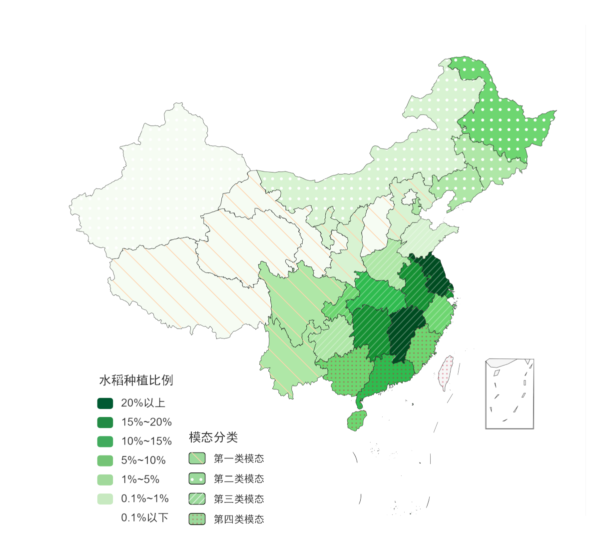

Atmospheric Remote Sensing · Atmospheric Chemistry
Satellite Observations of Atmospheric Composition
Hi! I’m Xingyi Wu, a master’s student at SUSTech. My research focuses on satellite observations of atmospheric trace gases, especially glyoxal (CHOCHO). I am particularly interested in evaluating and interpreting satellite products, using ground-based observations and atmospheric chemistry models as complementary tools to understand product uncertainties and the atmospheric processes behind satellite-observed patterns.
Research highlights
Seeing the Atmosphere from Space
Satellite observations provide a unique perspective on atmospheric composition, allowing me to explore spatial patterns, evaluate satellite products, and investigate their connections with atmospheric processes.



Understanding the Chemistry Behind the View
Beyond observing the atmosphere from space, I use chemical transport models as interpretive tools to investigate the chemical processes behind satellite-observed patterns, particularly the sources, sinks, and diurnal variability of trace gases.